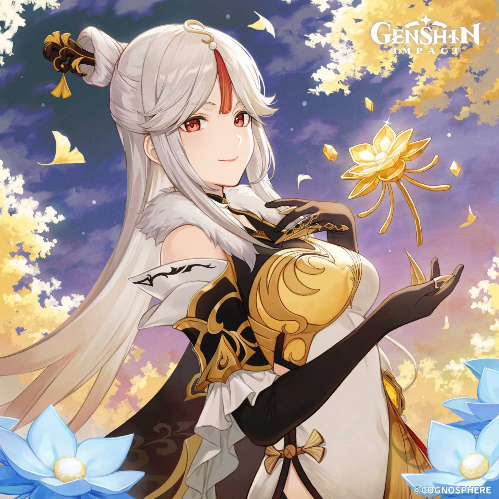
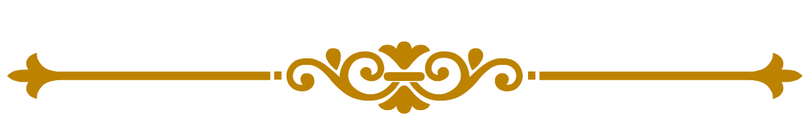
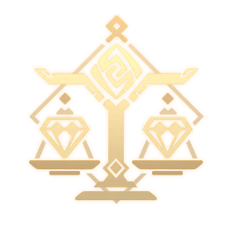

Catalizadora Geo de Genshin Impact
Ningguang
Perfil
Ningguang (Chinese: 凝光 Níngguāng), conocida como el Equilibrio Celestial, es miembro de las Siete Estrella de Liyue. Su riqueza es insuperable en todo Teyvat, Resguardada en el palacio flotante, ningún rumor de las personas más influyentes de Liyue se escapa de Ninguang. Aún así, siempre lleva en el rostro una sonrisa llena de misterio. Como Equilibrio Celestial de las Siete Estrellas, Ninguang no es solo la encarnación de la autoridad y la ley, también representa riqueza y sabiduría. Ella es una humana quien gobierna todo Liyue.
Historia
Las Estrellas brillantes controlan todo el comercio que tiene lugar en el puerto de Liyue. Sin embargo, Su posición es muy venerada pero también es codiciada por muchos. Su regla principal es jugar con seguridad y mantener un perfil bajo. Ella es una excelente comerciante a los ojos de sus rivales, una amigable hermana mayor para los niños pequeños, una socialité en los banquetes de la Terraza Yujing y una conocedora de postres... Todas y todos parecen saber sobre ella. Sin embargo, siempre cuentan una historia diferente de ella, habiendo grandes discrepancias entre sus versiones. Aún así, si hay algo en lo que todos los rumores sobre ella están de acuerdo, es en que Ninguang es alguien verdaderamente extraordinaria.
Regiones de Liyue
